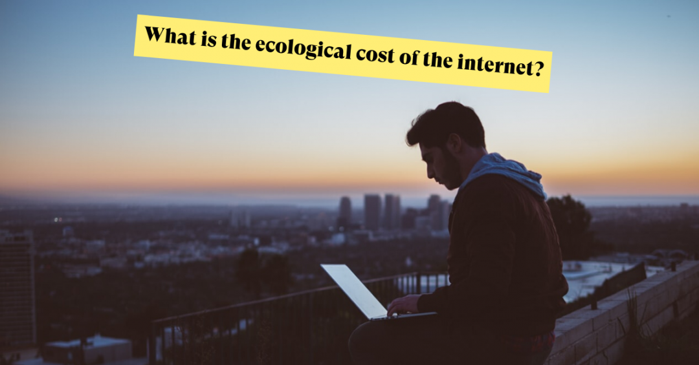
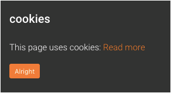
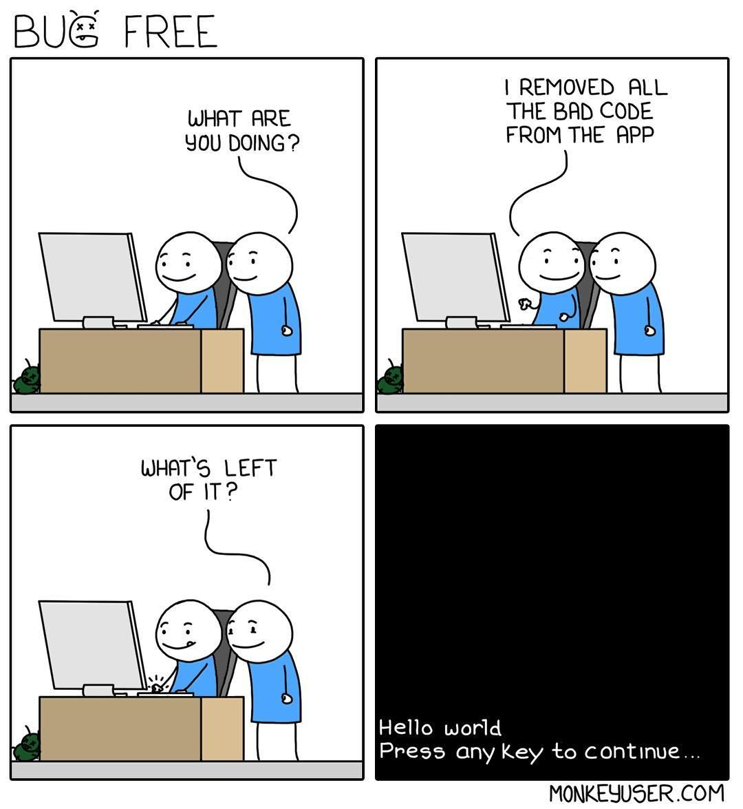

Que faire ?
Maintenant que nous savons qu’il faut agir vite (au cours des 30 prochaines année), comment freiner cette pollution liée au web et à l’intelligence artificielle ?
Tout comme la cigarette, il est difficile de combattre quelque chose lorsque les effets négatifs ne sont pas visibles immédiatement. Mais tout comme la cigarette, c'est le premier pas qui est le plus dur.
"Quel est le coût écologique d'Internet", une question que l'on doit se poser alors que cette technologie devient omniprésente
Les deux acteurs
Pour enrayer cette pollution, deux acteurs peuvent agir. Le consommateur, et le développeur (ici, en intelligence artificielle).
En juillet 2020, 4.5 milliards de personnes sur terre utilisaient activement internet. Il est important que le plus de personnes possibles contribuent à freiner la pollution numérique. 4.5 milliards de personnes réalisant un petit geste valent plus qu’une poignée de personnes réalisant un grand geste.
Le consommateur :
Si vous lisez cette page, vous êtes un consommateur. Ces conseils se destinent donc à vous. La plupart de ces conseils ne sont pas contraignants, juste une habitude à prendre. Et d'autres vous aideront même lors de votre navigation sur le web !
Supprimez les comptes et les adresses mails que vous n’utilisez plus !
Ces comptes, mêmes inactifs, restent présents sur les serveurs. Si vous n’utilisez plus votre compte linkedIn, Facebook, TF1… supprimez les.
Il en va de même pour vos adresses mails (hotmail, laposte, free, …). En plus de rester sur des serveurs, les adresses mails stockent aussi tous les courriers que vous n’avez pas supprimés.
Faites le tri dans vos mails !
Avez-vous vraiment besoin d’être abonné à la newsletter de la fnac, de darty, ou d’amazon ? Devez-vous vraiment conserver les spams, les offres promotionnelles, les notifications de vos réseaux sociaux ?
Une bonne pratique à suivre est de conserver un mail uniquement s’il a été envoyé directement pour vous (qu’il s’agisse d’un message de votre tante, ou bien une confirmation d’achat).
Utilisez un bloqueur de publicité !
En plus de vous faciliter votre navigation, les bloqueurs de publicités type Adblock ou uBlock ont aussi des vertus écologiques ! Chaque image en moins d’affichée, chaque fenêtre pop-up qui ne s’ouvre pas, c’est une demande de moins que l’on fait au serveur.
Moins de demandes, moins d'énergie consommée, moins de pollution.
Réduisez la luminosité de votre écran !
A moins d’être en plein soleil du temps de midi, vous n’avez à priori pas besoin d’avoir votre luminosité à 100%. Que ce soit sur votre téléphone ou sur votre ordinateur portable, baisser la luminosité augmente la durée de vie de votre batterie. Une batterie avec une meilleure longévité, c’est des temps de recharge en moins et donc de l’électricité économisée.
Trouvez des alternatives au cloud !
Le cloud est un outil très pratique. Il permet de placer vos documents sur des serveurs externes (à travers Google Drive par exemple) afin de les récupérer à tout moment.
Néanmoins cela ne veut pas dire que vous devez mettre en permanence tous vos documents dessus. Comme pour les mails, il est important de faire le tri. Gardez les documents que vous voulez absolument ne pas perdre. Cela est-il le cas de ce vieux PowerPoint que vous avez réalisé pour une présentation il y a maintenant cinq ans ?
Bloquez le tracking !
Que ce soit pour la géolocalisation ou pour connaitre vos préférences de consommation, beaucoup de sites internet vous traquent.
Mais depuis quelques années en Europe, tous les sites doivent vous demander votre accord (les fameux cookies), profitez-en pour refuser !
Il est facile de cliquer sur "tout accepter" sans lire de quoi il s’agit. Et pour pouvoir refuser les cookies, certains sites feront tout pour vous dissuader. Sachez cependant qu’en acceptant les cookies, vous acceptez aussi que ces sites puissent revendre vos informations personnelles à des publicitaires.
Certains sites ne donne pas l'option de refuser, mais celle-ci existe !
En plus d’être une pratique moralement douteuse, cela a aussi un poids écologique. Toutes les données que les sites récupèrent sur vous sont bien sûr stockées.
Multipliez cela par les 4.5 milliards d’utilisateurs d'internet, et vous vous retrouvez avec une catastrophe.
Téléchargez des vidéos plutôt que de les regarder en streaming !
Streaming ici veut dire ce que vous regardez en ligne.
A chaque fois que vous regardez une vidéo sur YouTube, une nouvelle requête est envoyée aux serveurs du site afin de vous envoyer cette vidéo directement chez vous. Si vous fermez votre navigateur, toutes les données transmises auront été perdues. Une nouvelle requête devra alors être envoyée la prochaine fois que vous voudrez regarder cette vidéo.
Vous avez une musique favorite que vous écoutez en boucle ? Télécharger la. Cela permettra d’effectuer une seule requête vers le serveur (à la place de dizaines, voire de centaines pour certaines personnes).
Le développeur (en intelligence artificielle) :
Vous souhaitez concevoir des IA, ou travailler dans la programmation en général ? Alors ces conseils sont pour vous.
Utilisez moins d’énergie lors de l’apprentissage de l’IA !
Une IA peut prendre des semaines afin d’être mise au point. Il est donc logique de vouloir faire avancer ce processus le plus rapidement possible. Cependant lorsque l’on voit l’impact écologique lié à ce dernier, des interrogations se posent quant au rapport coût (écologique) / bénéfice.
Afin d'agir pour la planète, il est important de ne pas faire de l’intelligence artificielle le successeur du crypto-mining en termes de consommation énergétique.
Il n'est pas demandé ici de faire marche arrière technologiquement parlant. Mais en attendant la transition vers des énergies plus vertes, il est préconisable de ne pas faire tourner son processeur à 100% en permanence.
En plus d’augmenter sa longévité, vous économiserez en facture électricité.
Ne créez pas d’IA pour tout et n’importe quoi !
Oui ça peut être marrant, et oui il faut bien s’entrainer sur quelque chose lorsque l’on commence. Mais encore une fois il faut savoir garder les contraintes écologiques à l’esprit.
Avons-nous vraiment besoin d’une IA destinée à designer le meilleur whisky au monde ? Ne serait-il pas mieux de développer une IA qui travaillerait sur des problèmes internationaux, plutôt que de développer des chatbots ?
Optimisez votre code !
Bien sûr, si vous travaillez en tant que développeur, vous avez peu de contrôle sur les points précédents. Vous réalisez ce que votre employeur ou votre client vous demande. Vous avez cependant le contrôle sur l’une des choses les plus importante : la programmation.
L’IA est une technologie qui évolue en permanence. Tenez-vous au courant des dernières techniques !
Un code mal optimisé, c'est une période de développement plus longue, et donc plus coûteuse en énergie.
"Bug free", par MonkeyUser
Et bien sûr...
suivez les mêmes recommandations que pour les consommateurs !
En tant que développeur, vous êtes aussi consommateur.
Peut-être que vous ne pourrez pas réduire votre empreinte écologique à votre travail, mais vous pouvez le faire chez vous !
En conclusion...
La pollution numérique ne pourra pas s’arrêter en une nuit, il faudra la participation de tous. Alors parlez, partagez, et enseignez.
Et si vous souhaitez vous engager davantage, sachez que Green Peace travaille aussi sur le sujet de la pollution numérique. Pour plus d'information, rendez-vous sur Green Peace : La pollution numérique.